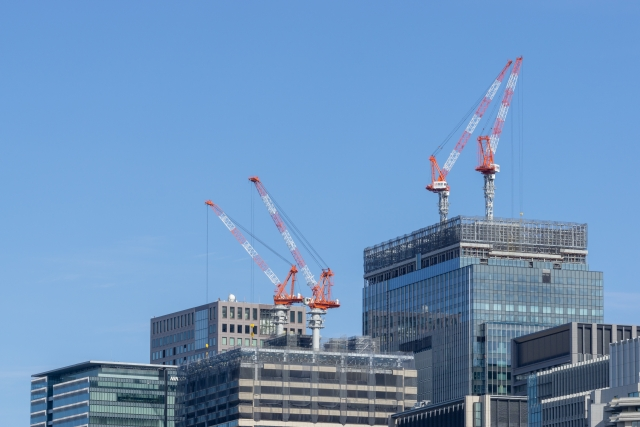

事業内容

公共工事
住宅工事
-

民間一般工事
環境省エネ工事
会社概要
所 在 地
岐阜県羽島郡岐南町上印食１丁目３００番地
電話番号・FAX
TEL ０５８(２４５)６７２５ / FAX ０５８(２４７）６５７４
資本金
２，０００万円
- 建設業許可 岐阜県知事(特－２８)第１０４７号
- 登録電気工事業届出 岐阜県知事許可 第４８０１号
昭和 ５年１０月 創業
昭和３９年 ４月 有限会社に組織変更
平成 ８年 ４月 株式会社に組織変更
平成１０年 ５月 中部電力(株)岐阜支店管内三十年優良工事店表彰 受賞
平成１８年 ８月 特定建設業許可取得